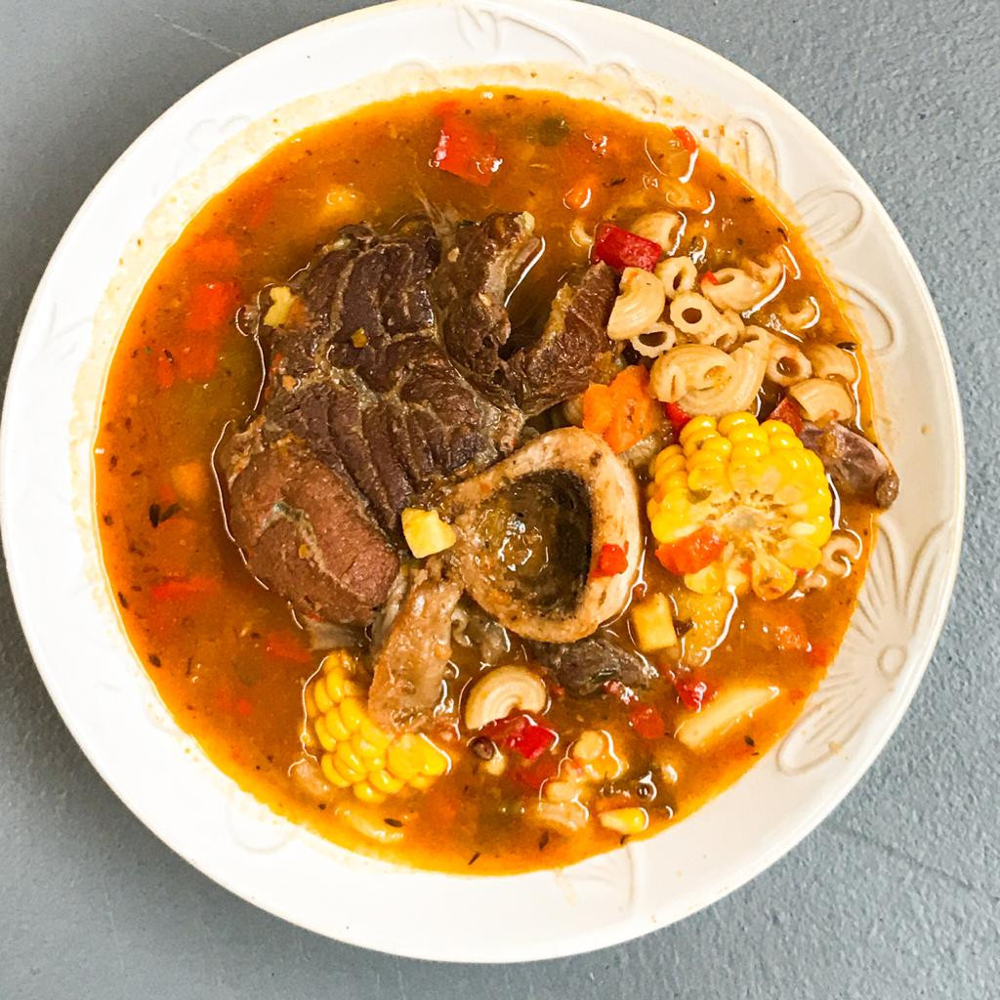

Guiso Carrero 🍲
Ver receta
Ingredientes
- 800g Roast beef
- 2 Papas medianas
- 1 Morrón rojo y 1 verde
Pasos
- Saltear verduras y carne.
- Agregar caldo y condimentos.
- Hervir y servir caliente.

🥘 Locro Argentino
Ver receta
Ingredientes:
- Maíz blanco partido
- Porotos blancos
- Carne vacuna (falda u osobuco)
- Carne de cerdo (costilla, panceta o bondiola)
- Chorizo colorado
- Chorizo criollo
- Zapallo (calabaza)
- Cebolla, Puerro y Zanahoria
- Hojas de laurel
- Sal
- Pimienta
- Pimentón dulce
Pasos
- Remojar maíz y porotos.
- Hervir con carnes y laurel.
- Agregar verduras picadas.
- Sumar zapallo y chorizos.
- Cocinar hasta espesar.

Empanada Salteña 🥟
Ver receta
Ingredientes
-
Carne vacuna a cuchillo (nalga o cuadril), cebolla y
cebolla de verdeo
- Pimiento rojo y verde
- Papas y huevos duros
- Grasa vacuna o manteca
- Pimentón dulce, comino, ají molido, sal y pimienta
- Harina y agua tibia con sal (para la masa)
Pasos
- Saltear cebolla, pimientos y carne con grasa.
- Agregar papas y especias, cocinar hasta tiernas.
- Enfriar y añadir huevo duro.
- Rellenar discos, cerrar y hornear o freír.